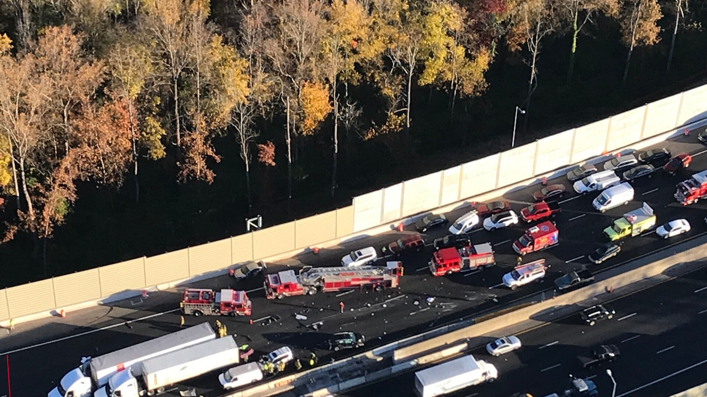
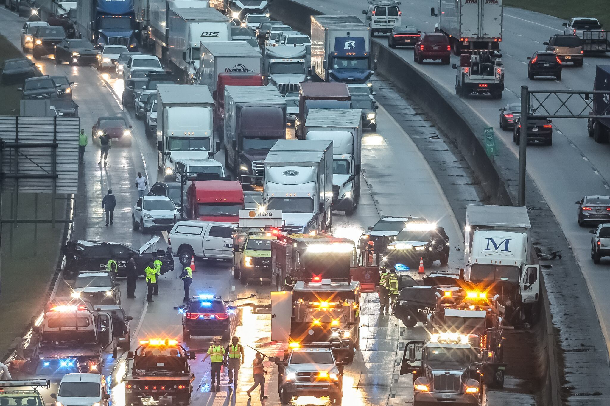
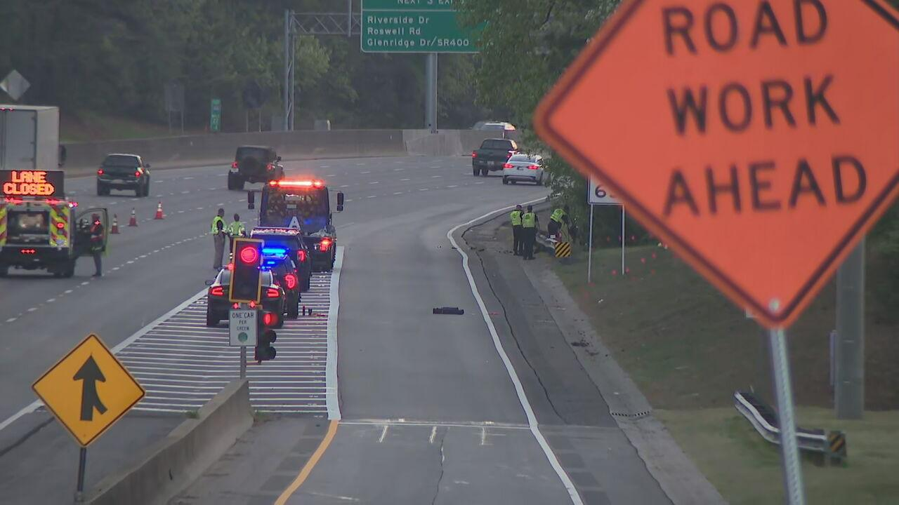

Which Atlanta
highway would
you avoid?
When we hear about crashes, we remember where they happen most often. However, raw numbers aren't the whole story.
Headlines leave a lasting impression.



These stories stay with us because they happen frequently, are dramatic, and are vivid. The more we hear about crashes on certain roads, the more dangerous those roads can feel.
Let's map out each reported crash in 2023 to see where crashes pile up.
Based on this map alone, which highway would you avoid?
Loading crash locations…
Zoom, drag, and point to explore. Click an article marker for a related WSB story. Close the popup with the ×.
The psychology of making data decisions.
You just made a quick judgment from the information in front of you. Flip the cards to learn more about the two ways humans tend to process information.
Let's put your System 2 thinking to work.
Atlanta commuters feel like driving during rush hour is the most dangerous.
Initially, the crash data seems to agree. Switch between the two views to challenge your first impression.
0
Loading crash data…
Hover, tap, or focus a cell for its count.
Darker cells mean more crashes. 00 is 00:00–00:59. Fatal or serious-injury counts crashes, not people.
Accounting for traffic gives us a more complete picture.
Notice how some hours have a higher crash frequency relative to how many vehicles are on the road.
Loading crash and traffic data…
Hover, tap, or focus a point for its value.
Counts: the two lines use separate axes, so compare their shapes rather than their heights. Vehicle passages come from FHWA TMAS traffic counting stations, so they approximate traffic near those counters, not every road. Rates: crashes matched within 500 m of a station, divided by that station's vehicle passages in the same hour.
First impressions can be misleading.
Now let's revisit our initial map. After dividing crashes by traffic volume to be more risk-relative, our rankings change.
Loading crash and traffic data…
Schematic highway map, not individual crash locations; hover over or focus a road for details. Crashes are assigned to an interstate through their matched road segment. Serious or fatal = K/A crashes; rate = serious or fatal crashes ÷ estimated vehicle-miles traveled (VMT) × 100 million. Corridor matching and traffic estimates introduce uncertainty, so rankings are exploratory.
There’s more to road safety.
Zoom out from a single ranking. Explore the structure of crash outcomes and compare crash density by highway to put the earlier patterns into context.
Loading crash and traffic data…
Click any section to zoom into that part of the hierarchy. Use the breadcrumbs that appear below or ↺ Full hierarchy to zoom back out.
Loading crash data…
Width is proportional to the number of crashes in the selected branch. Rush hour means weekdays 07:00–09:59 and 16:00–18:59; off-peak covers all remaining hours and weekends, so its larger total partly reflects more hours. Highway views assign crashes through their matched road segment. Severity shares are not exposure-adjusted crash risk.
To make better data decisions, don't just count crashes, count the context.
What caught my attention?
Notice when a memorable event or striking visualization shapes your first impression.
What is actually being measured?
Ask whether you're seeing a raw count, a rate, or something else entirely.
What context might be missing?
Consider traffic exposure, severity, time, and other relevant factors before drawing conclusions.
Our minds bring assumptions and cognitive biases into every decision.
System 2 thinking encourages us to pause, examine the evidence, and question what our first impressions may have overlooked.